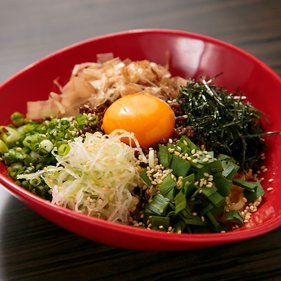
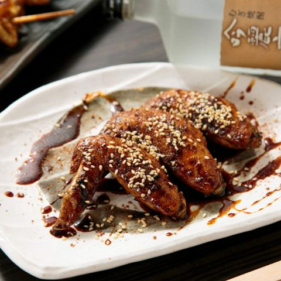

前橋で深夜・朝まで飲みたいとき
前橋市内は22時、23時で閉まるお店が多く、終電を逃したあとに行き場を失いがちです。 来んしゃいは18時から翌朝6時まで営業しているので、 終電後でも、始発待ちの時間でも、腰を落ち着けて飲めます。 JR前橋駅の始発時刻までのカウントダウンをサイト内に表示しているので、 アクセス欄で残り時間を確認しながらお過ごしください。
ワイワイ飲んで、うまいものを食べる。
それだけでいい居酒屋です。
群馬県前橋市の中心街、千代田町で元気に営業中の「酒食箱 来んしゃい」です。
肩ひじ張らずにどうぞ。焼き鳥・串焼きから手料理まで、気軽に楽しめるメニューをそろえています。
前橋エリアでは貴重な全席喫煙可能（加熱式・紙タバコOK）。仕事帰りの1杯も、二軒目・三軒目のはしご酒も、終電後の一夜明けまで、みんなで盛り上がれます。
深夜も終電後も、前橋でここしかない。
加熱式・紙タバコ、どちらもOKです。
群馬の地酒から全国の日本酒まで。

朝6時まで、同じクオリティで作り続けます。

名物上州和牛の炙りとろろユッケや名古屋発祥台湾まぜそばなど、「これ頼んで正解！」と言わせる自慢の一品です。
 職人技
職人技
焼き鳥や串焼きは、火加減にこだわって仕上げています。肉汁たっぷり、ビールにも日本酒にもバッチリ合います。

自家製スピードメニューでも手は抜きません。自家製の調味料で仕上げた即肴は、日本酒やハイボールとの相性バツグン。
愛煙家のみなさまへ。「来んしゃい」は全席喫煙可。
店主おすすめの組み合わせをご紹介します。
ガツンとくる煙のコクには、ウイスキーの強炭酸と、じっくり煮込んだ肉の脂が最高にマッチします。
爽やかな風味のタバコには、キリッとした柑橘の酸味と、甘辛いタレの香ばしさが口の中で綺麗に響き合います。
「前橋でもう一軒行きたいけれど、何を頼もう…」
そんな時は、来んしゃいガチャにおまかせ！
仕事帰りの一杯から、朝までのはしご酒まで。
前橋市内は22時、23時で閉まるお店が多く、終電を逃したあとに行き場を失いがちです。 来んしゃいは18時から翌朝6時まで営業しているので、 終電後でも、始発待ちの時間でも、腰を落ち着けて飲めます。 JR前橋駅の始発時刻までのカウントダウンをサイト内に表示しているので、 アクセス欄で残り時間を確認しながらお過ごしください。
改正健康増進法の施行以降、群馬県内でも店内で喫煙できる飲食店は年々減っています。 来んしゃいは全席喫煙可。紙巻きタバコも加熱式タバコもそのまま吸えます。 愛煙家の方に向けて、煙草とお酒のペアリングもご提案しています。 ※20歳未満の方はご入店いただけません。
千代田町の飲み屋街にあるので、1軒目のあとにふらっと立ち寄れます。 「何を頼めばいいか分からない」というときは おつまみガチャで店主おすすめのセットを引いてみてください。 軽くつまめる即肴が多いので、お腹がふくれたあとの2軒目でも入りやすい構成です。
団体でのご利用も承っています。人数とご予算をお電話でお伝えいただければ、 コース内容をご相談のうえご用意します。 詳しくは宴会・コースのご案内をご覧ください。 お席の確保が必要になりますので、事前のお電話をおすすめしています。
上毛電鉄の中央前橋駅から徒歩圏内、JR両毛線の前橋駅からは車で約5分です。 周辺には駐車場もありますが、お酒を飲まれる場合は公共交通機関か タクシーでのご来店をお願いしています。 道順の詳細はアクセス・駐車場のご案内にまとめました。
おひとり様でも、常連さんでなくても大丈夫です。 予算の目安、支払い方法、席の様子、お子様連れの可否などは よくあるご質問にまとめてありますので、 ご来店前に目を通していただけると安心かと思います。
現在、募集はありません
現在、スタッフの募集は行っておりません
たくさんのご応募をいただき、ありがとうございました。
新たな募集を再開する際は、こちらのページでお知らせいたします。
| お問い合わせ | 027-226-1139 |
|---|---|
| 住所 | 〒371-0022 群馬県前橋市千代田町5丁目6-8 |
| 最寄駅 | 上毛電鉄 中央前橋駅 徒歩圏内 JR両毛線 前橋駅 車で約5分 |
| 営業時間 | 18:00 〜 翌6:00 |
| 定休日 | 日曜日・祝日 |
| 喫煙 | 全席喫煙可（加熱式・紙タバコOK） ※20歳未満の方はご入店いただけません |
🚃 JR前橋駅（両毛線・高崎方面）の始発まで